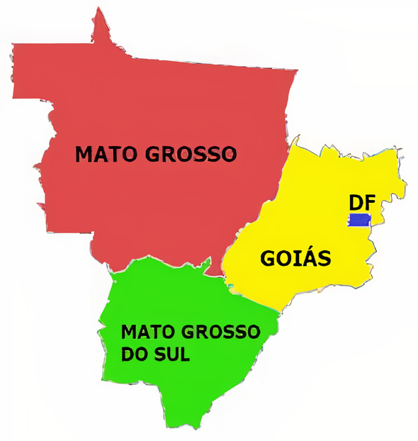

Região Centro-Oeste
Região Centro-Oeste é conhecida por ser a que não possui saída para o mar. Além disso, é uma das grandes produtoras agrícolas e a maior criadora de gado no Brasil.

A região Centro-Oeste do Brasil se destaca por sua extensão considerável, ocupando cerca de 19% do território nacional. No entanto, seus estados - Goiás, Mato Grosso, Mato Grosso do Sul e o Distrito Federal - apresentam baixa densidade populacional, figurando entre as regiões menos povoadas do país. Além disso, uma característica proeminente do Centro-Oeste reside em sua forte presença no setor primário da economia. As atividades agrícolas e pecuárias são de grande importância nos três maiores estados em extensão territorial, com destaque especial para o Mato Grosso, que detém o maior rebanho bovino do Brasil.